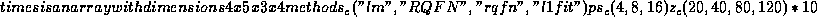

SPLUS provides an extremely sophisticated graphics environment which has recently been extended in important directions by the incorporation of trellis graphics, offering a general approach to the idea of ``small multiples''advocated by Tufte (1992). It would be foolish to entertain a general introduction to this topic, the reader might wich to consult Cleveland (1993) which is itself a good example of reproducible research, all of the data and S code required to produce the figures in the book are easily available over the internet. We will only illustrate some basic ideas related to reproducibility of graphics and their incorporation into LaTeX documents.
A few general principles seem obvious:
The following SPLUS commands illustrate a source file used to generate Figure 4.1. latex.table in the following way,
#this is a plot to compare lm with several l1 timings #output from m.4 and m.5 is structured in the following way: #m.[56]$times is an array with dimensions 4 x 5 x 3 x 4 postscript("fig.4.1.ps",horizontal=F,font=7,pointsize=10,width=6.5,height=4.5) par(mfrow=c(1,3)) ps_c(16,8,4) for(i in 3:1){ m.5.m_apply(m.5$times,c(1,3,4),"median") m.6.m_apply(m.6$times,c(1,3,4),"median") z_c(20,40,80,120)*100 z_c(z,z*10) plot(z,c(rev(m.6.m[2,i,]),rev(m.5.m[2,i,])),type="l", log="xy",xlab="n",ylab="seconds") lines(z,c(rev(m.6.m[1,i,]),rev(m.5.m[1,i,])),lty=2) lines(z,c(rev(m.6.m[3,i,]),rev(m.5.m[3,i,])),lty=3) lines(z,c(rev(m.6.m[4,i,]),rev(m.5.m[4,i,])),lty=4) legend(4000,500,c("l1fit","lm","rqfn","RQFN"),lty=1:4) title(paste("p=",ps[i])) } frame()
This was accomplished simply by the command
source("fig.4.1.s")in SPLUS, which produced the file fig.4.1.ps which was then incorporated into the present document with the following LaTeX convention.
\begin{figure}[hbt]
\begin{center}
{\includegraphics{fig.4.1.ps}}
\begin{caption}
{Timing comparison of three algorithms for median regression:
Times are in seconds for the median of five replications for iid Gaussian
data. The solid line represents the timings for the simplex-based
Barrodale and Roberts algorithm, the {\tt rqfn} dashed line represents
a primal-dual interior point algorithm, {\tt RQFN} uses a preprocessing
step and the {\tt rqfn} algorithm, and the dotted line represents least
squares timing based on ${\tt lm(x \sim y)}$ as a benchmark}
\end{caption}
\end{center}
\end{figure}

Note that this approach allows one to modify the figure by rerunning the SPLUS code without having to modify the LaTeX document. Of course, other device drivers, notably motif() provide an indispensible service in preliminary, exploratory stages of preparing graphics. We might also note that the inclusion of code into LaTeX documents is facilitated by the use of the verbatim environoment in LaTeX and the package alltt written by Lamport(1992). The S function S_to_tex written by John Chambers and available from Statlib is a useful translation device in preparing code for LaTeX inclusion.